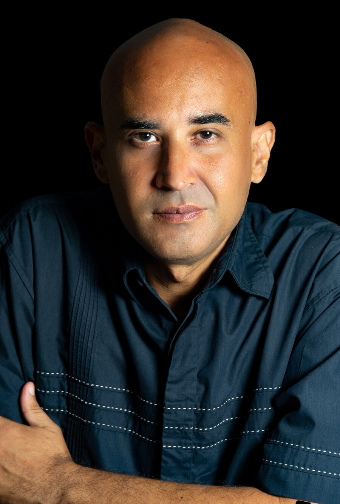

Radicado en Maracaibo, Venezuela, cuento con más de 25 años de trayectoria en los ámbitos artístico y audiovisual. Soy graduado en Artes y he consolidado mi formación a través de estudios especializados de fotografía a diferentes niveles, lo que me ha permitido desarrollar un criterio técnico y estético riguroso.
A lo largo de mi carrera, me he desempeñado con éxito en la fotografía de eventos sociales y de producto, y he sumado experiencia sustancial como asesor técnico en diversos proyectos audiovisuales. Esta versatilidad analítica me permite documentar las artes vivas y capturar la memoria visual del movimiento y el escenario con una visión particular.
Mi enfoque va más allá del registro convencional; busco traducir ese segundo preciso donde el cuerpo, la disciplina del intérprete y la iluminación dramática confluyen para crear arte. Gracias a un profundo dominio técnico de las complejas condiciones de luz en los teatros, ofrezco a compañías de danza, ballet y agrupaciones escénicas un testimonio visual fiel, con la nitidez, plasticidad y fuerza que cada obra merece.
Desarrollo proyectos fotográficos de autor, coberturas institucionales y asignaciones especiales orientadas a preservar el patrimonio efímero de la escena.